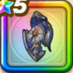

みちびきの盾【滅】
攻略班 10点 / あらがう意志全属性ダメージ+5%
くわしい特徴
【レベル別習得スキル】 Lv1ダメージをうけた時、確率でテンションを付与 Lv5さいだいMP+10 Lv10あらがう意志（消費MP：20）自身に悪い状態変化とすべての状態異常を防ぎ、テンションを下げる効果を無効化する効果といてつくはどうガードを付与する Lv15全属性ダメージ+5% Lv20攻撃力+10 Lv23かいふく魔力+10 Lv25ガード率+1% 【限界突破スキル】 1凸こうげき魔力+10 2凸ガード率+1% 3凸すばやさ+5 4凸ガード率+2%